Quelques informations
Planètes Telluriques
Planètes Gazeuses
Recommandation
Astronopedia
Me contacter
Changer de thème
Bienvenue sur Astronopedia
Bonjour, je m'appelle Enzo Vargas, je suis passionné d'Astronomie et comme ultime hommage j'ai décidé de réaliser ce site, vous retrouveraiez ici des informations très simple et basique mais je réalise tout ceci afin de partager ma passion du gigantisme de l'espace et de l'univers.
A votre disposition quelques onglets qui vous permettrons d'exploxer ce site, il est possible qu'avec le temps le contenus d'Astronopedia s'étoffe.
Rapport de Mission